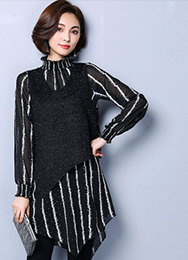
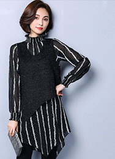

设计团队
- 刘清扬
- 韩璐璐
- 周翔宇
- 罗峥
生平简介
BRIEF ACCOUNT OF THE AUTHOR'S LIFE设计师刘清扬( CHRISTINE LAU),生在北京 ,长在香港, 18岁留学英 国,就读于CENTRAL SAINT MARTINSCOLLAGE英国圣马丁艺术设计学院) TEXTILEDESIGN (面料设计)专业。出于对服装设计的热爱,毕业后,在做 面料设计师的同时开始自学服装设计。在中西文化结合的生长环境影响 下,形成了对设计的独特见解。面料设计的基础更令其在服装设计.上有 着得天独厚的优势。
设计风格
DESIGN STYLE设计风格优雅而前卫,注重服装设计的原创精神。设 计师将复古元素和现代简约设计巧妙的结合在-起,创造出 -种精致并且经典的设计风格。设计师认为面料是影响服装 设计的关键所在,因此对面料的运用有着独特的见解 而每一季由设计师亲自操刀设计的另类印花面料
设计作品
BRIEF ACCOUNT OF THE AUTHOR'S LIFE生平简介
BRIEF ACCOUNT OF THE AUTHOR'S LIFE韩璐璐普游学于加拿大及意大利,在意大利米兰顶级设计学院ISTITUTO MARANGONI获得硕士学位。她曾参 与多家高端品牌的设计项目,其中更以自由设计师身份加入世界顶级礼服巨擘桂由美YUMI KATSURA的设计工 与多家高端品牌的设计项目,其中更以自由设计师身份加入世界顶级礼服巨擘桂由美YUMI KATSURA的设计工 稿人及多家电视媒体造型师。作为“新式轻礼服”创导者,从2008年HLL设计工作室成立之初,便受到都会精 英女性的热捧和时尚媒体的广泛关注。
设计风格
DESIGN STYLE作为“新式轻礼服”创导者,韩璐璐不拘泥于轻礼服既为酒会小礼服的固有形式,推出了“新式轻礼服”的概念 将礼服的精致与成衣的实穿完美结合。在材料及工艺的选择处理上,细致考究、自然妥贴。她擅长将典雅的东方 气质与利落的西式剪裁相融和,强调女性精致、优雅的特质;提倡一衣多变及无季节性的穿搭理念,力求在设计 感与实穿性上找到最佳契合点。
设计作品
BRIEF ACCOUNT OF THE AUTHOR'S LIFE生平简介
BRIEF ACCOUNT OF THE AUTHOR'S LIFE周翔宇出生于1982年,毕业于DEN HAAG服装学院,曾经攻读工业造型设计并在AMSTERDAM自由大学修读 荷兰语。周翔宇曾经为夏纳国际电影节、威尼斯国际电影节、东京国际电影节、香港国际电影节、釜山国际电 影节、印度国际电影节等艺人、导演定制红毯礼服。
设计风格
DESIGN STYLEXANDER ZHOU以独特的视觉艺术角度、出众的设计剪裁进行一种新的诠释 ,他的多元化的市场理念在中国服 装界构筑出一个全新的商业模式。周祥字喜欢MIUCCIA PRADA以及NICOLAS GHESQUIERE的设计。多年的 专业经历让他对设计以及经营都有着很清晰的思路。他的作品非常注重服装穿着时的整体搭配性，强调模糊性 别的着装概念,而不是刻意的中性感, - -切以完美的视觉效果出发。
设计作品
BRIEF ACCOUNT OF THE AUTHOR'S LIFE 

生平简介
BRIEF ACCOUNT OF THE AUTHOR'S LIFE罗峥淡然处事。笑谈风云,在成功经营自己的时装品牌的同时又成为国际投资商的座上宾。用她设计师敏锐的 感悟与与他们讨论着天下时尚大势。但她毕竟只是- -个女孩子。而且还是- -个很年轻的女孩子。所以知性加感 性的她有着无限美好的发展前景。看罗峥设计的时装，就会发现许多艺术元素，比如。用扇子、中国花鸟、旧 上海洋烟图等意象组合而成的中西合璧旗袍;
设计风格
DESIGN STYLE风之翼系列源自新古典浪漫主义,秉承经典时尚的风格,极富唯美,浪漫的韵味.把传统的思维用现代的理念 表达出来，寻求- 种自然而现代的平衡。用纯艺术的,戏剧性的手法来突出-种典雅的气质。运用各种富有机 理质感的面料和现代的结构技巧来实现时尚与古典优雅的统一, 创造一种不同凡想的视觉效果。从而营造出高 贵中带有不羁的女性,她就象灵动而富有激情的天使,于典雅中流露忧郁,诠释着无法抵挡的女性魅力，

设计作品
BRIEF ACCOUNT OF THE AUTHOR'S LIFE